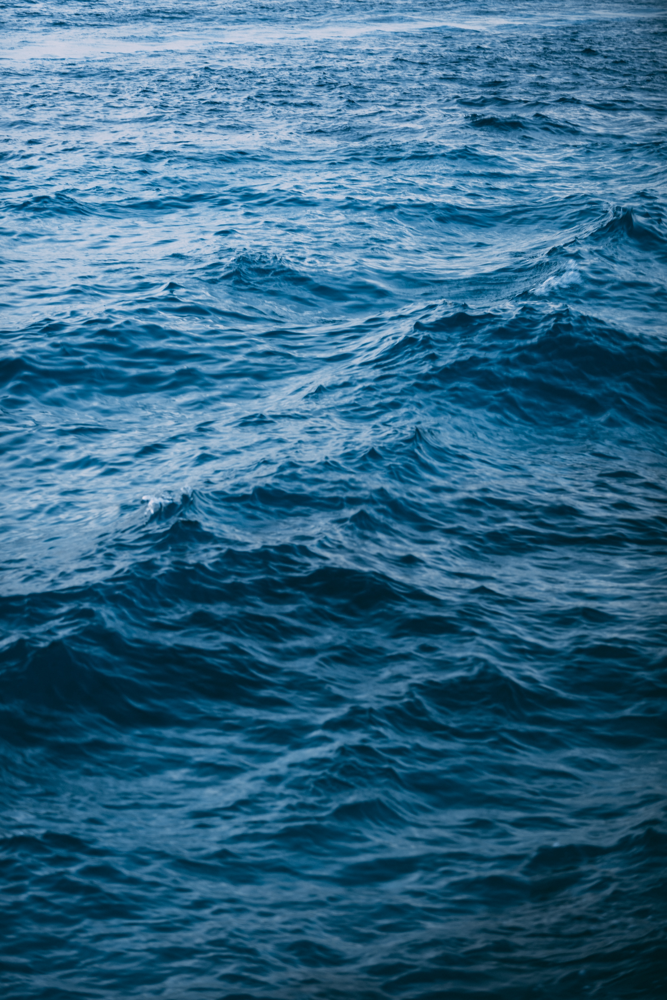
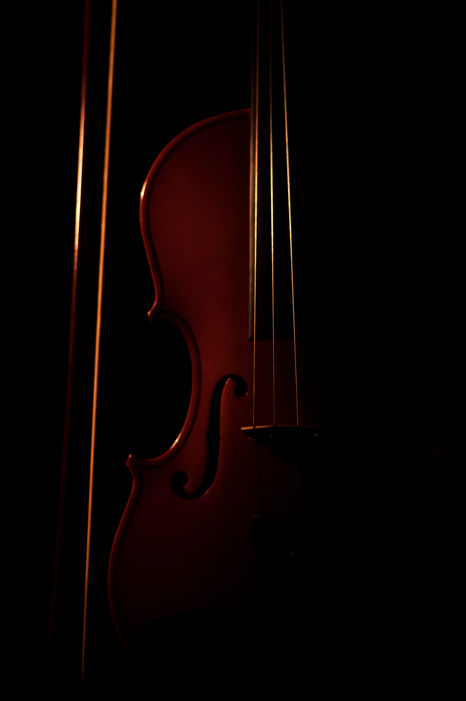

4 Beethoven – String Quartet op 18 no 1
11 Beethoven – Violin Sonata no 1 in D
1 Beethoven – Symphony no 5
6 Glazunov – String Quartet no 1, op 1
12 Glazunov – Lyric Poem, op 11
16 Glazunov – Meditation op 32
1 Haydn – Theresienmesse
2 Haydn – Symphony no 45
2 Haydn – Symphony no 49
10 Haydn – String Quartet op 33, The Bird
11 Haydn – String Quartet op 76, Quinten
12 Holst – Japanese Suite, Op 33
1 Mozart – Symphony no 25
3 Mozart – String Quartet no 15 'Dissonance'
Shostakovich – Symphony no 5
11 Sibelius – Impromptu op 5 no 6
1 Sibelius – Malinconia op 20
5 Sibelius – Tapiola op 112
10 Sibelius – Andante Festivo
5 Zelenka – Miserere ZWV 57

11 Bach – Sonata in C minor BWV 1017
3 Beethoven – Piano Trio no 7 in op 97 'Archduke'
11 Bridge – Suite for String orchestra
2 Delius – Florida Suite
1 Faure – Piano Quintet in d op 89
Holst – The Planets
3 Janáček –In the Mists
1 Janacek – String Quartet no 2, Intimate Letters
4 Mendelssohn – String Symphony no 7 in d
1 Mendelssohn – 2 Konzertstück for Clarinet
1 Mozart – Piano Concerto in A no 23 K488
1 Prokofiev – Battle on the Ice
Rachmaninov – Symphony no 2 in e op 27
12 Reger – Isle of the Dead sr_0
1 Schoenberg – Verklärte Nacht
2 Sibelius – Finlandia
10 Sibelius – Pohjola’s Daughter op 49
Strauss – Metamorphosen
2 Tchaikovsky – Symphony no 1
15 Vivaldi – Concerto for 2 Violins in a RV 522
12 Albinoni - Oboe Concerto no 2 in d op 9
13 Alfvén – Swedish Rhapsody No 1
10 Atterberg – Symphony no 7
11 Bach CPE - Flute Concerto in d
10 Bach JC - Symphony in g op 6 no 6
Beethoven – Symphony no 9
10 Bernstein Clarinet Sonata
31 Bridge – 4 Short Pieces for Violin And Piano
2 Britten – Simple Symphony
12 Dvorak – Serenade for Strings in E Op 22, sr_2
11 Halvorsen - Bjornstjerne Bjornson
12 Honneger - Pastorale d'été
11 Ireland - Concertino Pastorale for strings
7 Kodály – Háry János Suite
12 Liadov – The Enchanted Lake
16 Maxwell Davies – Farewell to Stromness
10 Myaskovsky - Symphony no 23 in a
10 Myaskovsky - Symphony no 25 in D flat
10 Myaskovsky – Piano Sonata op 84
11 Pergolesi – Violin Concerto in B flat
10 Purcell - Adelazer Suite
3 Ravel – Bolero
10 Steinberg – Symphonic Prelude Op 7
5 Stenhammar – Symphony no 2 in g op 34
11 Stenhammar – Excelsior, Symphonic ouverture op 13
Stravinsky - The Rite of Spring
10 Tartini - Violin Sonata in c op 4 no 6
10 Tchaikovsky - Hymn of the Cherubim
11 Vasks - Pater Noster
11 Hildegard von Bingen – O Tu Suavissima Virga
10 Barry - Flying Over Africa
10 Beethoven - Violin Sonata no 5 in F
11 Boyle - String Quartet in e, mov 2 Adagio
10 Bruch - Ave Maria
12 Delius - Walk to the Paradise Garden
10 Dukas - L'Apprenti sorcier
11 Dvorak - Ballade for violin and piano op 15
10 Dvorak - String Quartet no 12 op 96
10 Dvorak - The Noon Witch
11 Fibich - Toman and the Wood Nymph op 49
13 Glazunov - Elegy for Cello and Piano op 17
14 Glazunov - Spring op 34
10 Gluck - Flute Concerto in G op 4
10 Kodaly - Summer Evening for orchestra
10 Lloyd - Symphony no 6
10 Martinu - Symphony no 6 H343
10 Nielsen - Little Suite for Strings op 1
10 Noskowski - The Steppe
10 Panufnik - Symphonia Sacrae No 3
10 Rautaavara - Concerto for Birds and orchestra
10 Rott - Julius Caesar Overture
10 Sibelius - 2 Pieces for Cello and Orchestra
10 Sinding - Legend for Violin op 46
10 Vieuxtemps - Elegy for Viola and Piano op 30
10 Vivaldi - Concerto for 4 Violins in b minor R580
10 Bach/Elgar - Fantasia and Fugue in c
10 Bach/Resphigi - Violin Sonata in e BWV 1023
10 Corelli - Concerto Grosso op 6 no 8
14 Dvorak - Violin Sonata in F
14 Fibich - At Twilight
11 Glazunov - Intermezzo Romantico
Glazunov – Symphony no 6 in C op 58
11 Glazunov - Concerto for Alto Saxophone op 109
John Jeffreys - Blackleight Idyll
Liszt - Hunnenschlacht Symphonic Poem no 11
Madetoja- Suite Lyrique
12 Mendelssohn - Overture "The Hebrides"
17 Myaskovsky - Cello Sonata no 1 op 12
10 Myaskovsky - Violin Sonata - op 70
10 Roussel - Symphony 2 in B flat
10 Saint-Saëns - Violin Sonata no 1 in d
15 Schubert - Piano Trio no 2 in E flat D929
11 Svendsen - Sigurd Slembe, Symphonic Prelude

2 Viderunt Omnes
11 O Tu Suavissima Virga
2 Stabat Mater
1 Mass for 4 voices
2 Missa Papae Marcelli
1 from Tenebrae Responsorae
1 Theresienmesse
3 String Quartet 'The Bird'
4 String Quartet op 76 'Quinten'
1 Symphony no 45 in f
2 Symphony no 49 in f
6 String Quartet no 2 in D
3 Piano Trio No 2 in E flat D939
9 Flute Concerto in d
5 Symphony in G
7 Elegy for viola and piano
1 Viola Sonata Op 120 no 1
1 Symphony no 1 in g ‘Winter Dreams’
Symphony no 4
4 Rott 1858 Julius Caesar Overture
Symphony no Symphony
Ruckert Lieder
String Quartet
Verklärte Nacht
1 Symphony no 3 in A
1 Prelude and Fugue in D
1 Intermezzo Notre Dame
2 Sea Hawk, Suite from the film music
2 Kings Row
1 Violin Sonata
3 Bachiana Brasilieiro no 5
1 Symphony no 12
3 The Little Train of Caipira
1 A Jewish Poem
1 Song for Violin and Piano
11m. Symphony no 4 in c
1 Symphony in F
7 Japanese Suite, Op 33
4 Suite for string orchestra
1 Indra
1 Egdon Heath
4 The Sea
7 Japanese Suite, Op 33
28 Four short pieces for Violin and piano
9 Three Idylls for String Quartet
11 Suite for String orchestra
1 Dance Rhapsody
7 Old English Songs for string orchestra
16 Farewell to Stromness
Finlandia op 26
4 Kuolemattomuuden
5 Suite lyrique
2 Okon Fuoko Suite op 58
9 Concerto for Birds
1 Symphonie sur un Air montagnard francais
1 String Quartet in F
2 Bolero
1 Concertino for Trumpet, Strings and Piano
3 Pastorales de Noel
1 Tuba Sonata
1 Bassoon Sonata
3 Phantasy
2 Violin Concerto
2 String Quartet in e Adagio
1 Bassoon Sonata
1 Lament for Owen Roe
1 The Four Masters Overture
1 In Memoriam Mahatma Gandhi
2 Elegy for Strings
1 de Profundis
5 Symphony no 2
7 Symphony 3 Sacrae
5 Old Polish Suite for Strings
1 Piano Concerto in f sharp minor
10 Piano Sonata no 9 op 84
9 Symphony no 23 in a
10 Symphony no 25 in D
1 Symphony no 2 in d
1 Symphony no 17 (fragment)
10 Clarinet Sonata
1 Symphony no 3
1 Three times will go past
1 Pastorale
1 Symphony no 1
9 Pater Noster
The Very Best of Louis Armstrong
Satch blows the Blues
10m. Kind of Blue Dave
2 Time Out (album)
1 The Great Concerts (live album)
Black Codes from the Underground (album)